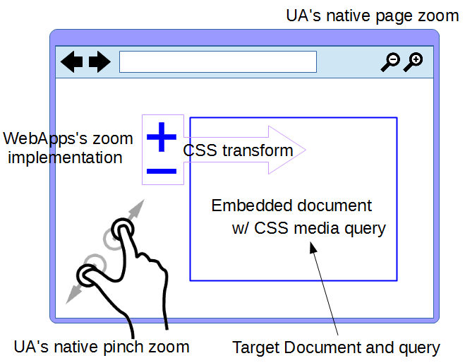

1. Introduction
（＊＊＊＊＊ユースケースの章と重なる部分があるので、必要か＊＊＊＊＊）When change arises to the scale of contents by the zoom function which a user agent has, or change of CSS3 Transforms, media query with zoom media features can provide the responsible contents concerning zooming. In addition to control of a style sheet, the application to elements which can have media attributes such as source element etc. is also taken into consideration.
2. Use case
This section is non-normative.
It is essential for applications such as Mapping and High-Resolution Photos which have interactive zooming functions.
The zoom is implemented using a zoom function that is provided by UA level natively or by application level. There are two types of UA-level zoom functions: 1) page zoom which takes into account the size of initial viewport, and 2) pinch zoom which acts like a magnifying glass that doesn't affect the viewport. On the other hand, application-level zoom function controls a scale of coordinates for contents.
Moreover, contents provider may want to provide the most appropriate contents or styling according to zoom ratio changed by the user's zooming operation. Such functions are called 'Level of Detail' (LoD) and are conventionally popular. LoD is effective functionarity not only to provide information interactively from overview to detail but also to control the distribution of the detailed large size data. It is convenient for content providers that UA has a function which such LoD realizes without massive JS apps.
The function which controls styles and resources according to various environments which surrounds contents is offered as css media query and picture element etc. which used it. It is considered that zoom shown here is also a kind of such environment. So, this specification prescribes a feature that control dynamic expression of content according to zoom by extending Media Queries.
@media (zoom >= 2.0)
@media (min-zoom: 2.0) { ... }
<html>
<head>
<style type="text/css">
@media (min-zoom: 1.0) {
.content {
display: inline;
}
}
@media (min-zoom: 2.0) {
.content {
display: none;
}
}
</style>
</head>
<body>
<img class="content" src="sample.jpg"/>
</body>
</html>
<picture>
<source
media="(min-zoom: 4.0)"
srcset="images/ultra-high-res-image.png">
<source
media="(min-zoom: 2.0)"
srcset="images/high-res-image.png">
<img
src="images/normal-image.png"
alt="a zoomable image">
</picture>
3. Difference between existing features and zoom features
-
resolutionmedia features -
zoomproperty at @viewport
-
resolution media feature takes into account the page zoom, but regards the pinch zoom as 1.0.
-
This specifies only layout of content at initial status rather than description according to interaction. And also, there are only mobile browsers but no desktop browsers supporting this.
4. Possible zooming types
This section is non normative.
This chapter organizes possible zooming patterns provided by UA and web contents. UA may have a native function for zooming such as page zoom and pinch zoom. Also, CSS pixel size may not be same as the size of device pixel (dot), as it may appear as devicePixelRatio. Additionally, web contents are sometimes nested with iframe element. The CSS pixel unit size in child document may differ from the CSS pixel unit size in parent document when CSS Transforms is applied to the contents in the documents. These parameters to change the size of contents are able to fall into the concept of "zoom". The formula including these all parameters regarding zoom is indicated as below. This formula indicates relation between the dot size of device and the pixel size in the user coordinate of root element in the most descendant document.
deviceDotSize = resolution[dppx] * PinchZoom * DocumentScale(child) * .... * DocumentScale(this) * contentSize
resolution[dppx] = nativeResolution * PageZoom
This picture shows the configuration of UA and its contents which the above-mentioned formula assumes. 
Each variable number is described as below. The variables are defined as scalar value.
- resolution
- This is a value of resolution with "dppx" prescribed in [CSS3-VALUES]. This value is same as devicePixelRatio defined in [CSSOM-VIEW].
- PageZoom
- This is a value of page zoom prescribed in [CSSOM-VIEW]（＊＊＊＊＊＊PageZoomのように、キャピタライズされている意味はあるか？＊＊＊＊＊＊＊）
- PinchZoom
- This is a value of pinch zoom prescribed in [CSSOM-VIEW].
- DocumentScale
- This is a value of scale given by transform to child's content of an element for embedded content (HTMLEmbedded Content, SVG Embedded Content) such as iframe, if contents targeted by media queries are nested with an embedded content element. Whole scale value is calculated by multiplying each scale in each nest. Let DocumentScale(child) be a scale given by transform from a root document to a child document. Let DocumentScale(this) be a scale given by transform from a parent document of the descendant document (called this) to the descendant document.
- nativeResolution
- This is a value of resolution in a condition that PageZoom is 1.0.
- deviceDotSize
- This is a value of size of device native pixel in 'dot' unit system.
- contentSize
- This is a value of size of CSS pixel in a content's coordinate system. This value is able to be scaled with transform function.
4.1 Scale of Embedded Content
Transform matrix ([CSS-TRANSFORMS]) from parent's coorditnate system to child's coordinate system is given by CTM of an embedded content element in parent content and implicit transformation in [SVG2]におけるviewport establishment process in [SVG2]. The value of scale ([CSS-TRANSFORMS-2]) is given by the transform matrix.
transform property can be given to child element of document's root element in HTML and SVG. However, DocumentScale is absolutely a value given by transform to parent document's root element. Because media qureies takes into account only external condition of the document, but not internal condition of the document.
<html>
<head>
<style type="text/css">
@media (min-zoom: 2.0) {
.content {
display: none;
}
}
.content {
transform: scale(2.0);
}
</style>
</head>
<body>
<iframe id="parent" class="content" src="child.html" />
</body>
</html>
<html>
<head>
<style type="text/css">
@media (min-zoom: 2.0) {
.content {
display: none;
}
}
</style>
</head>
<body>
<iframe id="child" class="content" src="sample.jpg" />
</body>
</html>
4.2 Possible zoom listings
| Device's dot size | = | resolution | * | PinchZoom | * | DocumentScale(child) | * .... * | DocumentScale(this) | * | User coordinate's size |
|---|---|---|---|---|---|---|---|---|---|---|
| Window's native CSS pxel size | = | 'zoom' | * | Root document's css pixel size | ||||||
| Device's dot size | = | 'zoom-dot' | * | Root document's css pixel size | ||||||
| Window's native CSS pxel size | = | 'document-zoom' | * | User coordinate's size | ||||||
| Device's dot size | = | 'document-zoom-dot' | * | User coordinate's size | ||||||
| Windows's CSS pixel size | = | 'window-scale' | * | User coordinate's size | ||||||
| Parent's CSS pixel size | = | 'document-scale' | * | User coordinate's size | ||||||
Use cases of each zoom type
- 'zoom'
- The case that styles and contents are provided according to pinch zoom gesture provided by UA native functionality.
- 'zoom-dot'
- The case that styles and contents are provided with reflecting the devicePixelRatio such as Retina display in addition to 'zoom'.
- 'document-zoom'
- （＊＊＊＊＊説明が必要＊＊＊＊＊）
- 'document-zoom-dot'
- （＊＊＊＊＊説明が必要＊＊＊＊＊）
- 'window-scale'
- The case that styles and contents are provided according to scale of CSS Transforms on contents imported by iframe and img element, but independing on pinch zoom gesture provided by UA native functionality.
- （From the viewpoint of mapping use case, "document-zoom" is better rather than this "window-scale")
- 'document-scale'
5. Zoom media features
Zoom media features are prescribed as below based on the formula in a previous section. These features are specified by a single term or the combination of terms in the above formula.
5.1 zoom
Applies to: visual and tactile media types
Accepts min/max prefixes: yes
Thezoom media feature corresponds to pinch zoom described on [CSSOM VIEW]. (This naming of this feature is to ensure consitency with zoom)
5.2 document-zoom
Applies to: visual and tactile media types
Accepts min/max prefixes: yes
The 'document-zoom' media feature corresponds to PinchZoom * (embedContentScale(root)) * .... * (embedContentScale(parent)). This means zooming to window of UA in CSS Pixel coordinates of document targetted by media queries.UA native zooming is reflected to this features.
Acknowledgments
This specification is the product of the W3C Working Group on Cascading Style Sheets.
References
Normative References
- [CSSOM-VIEW]
- CSSOM View Module 1 URL: http://www.w3.org/TR/cssom-view/
- [CSS-DEVICE-ADAPT]
- CSS Device Adaptation URL: http://www.w3.org/TR/css-device-adapt/
- [MEDIA-QUERIES]
- Media Queries URL: http://www.w3.org/TR/css3-mediaqueries/
- [CSS-VALUES]
- CSS Values and Units Module Level 3 URL: http://www.w3.org/TR/css3-values/
- [CSS-TRANSFORMS]
- CSS Transforms Module Level 1 URL: http://www.w3.org/TR/css3-transforms/
- [SVG2]
- Scalable Vector Graphics (SVG) 2 URL: http://www.w3.org/TR/SVG2/
- [CSS-TRANSFORMS-2]
- CSS Transforms Module Level 2 URL: http://svg2.mbsrv.net/devinfo/devstd/CSS_Transforms_Diff/css3Transforms_tmp/css-transforms-2_tmp/